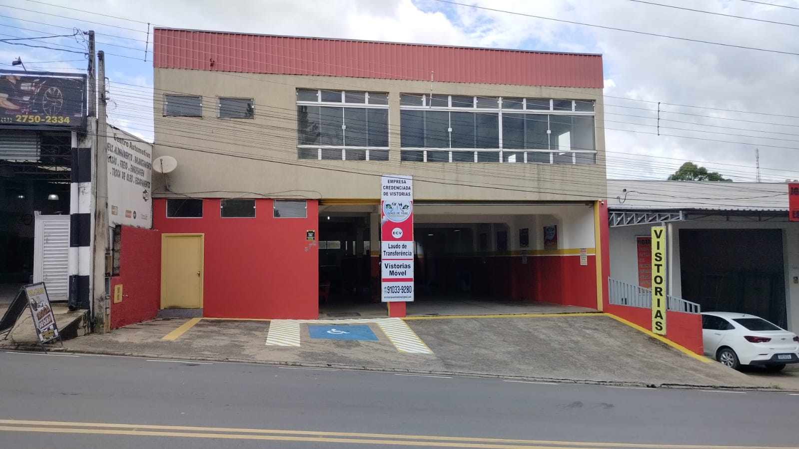
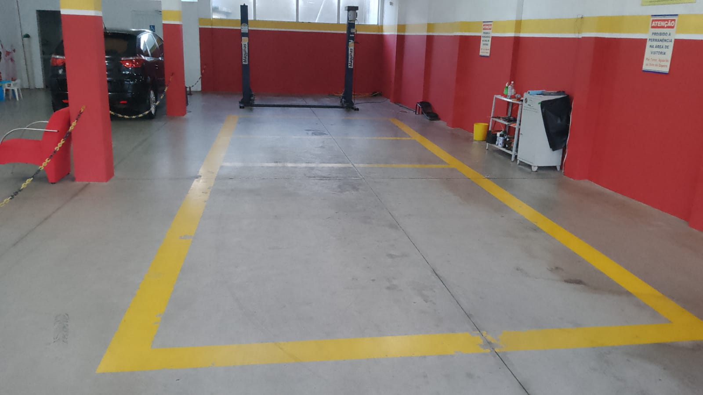
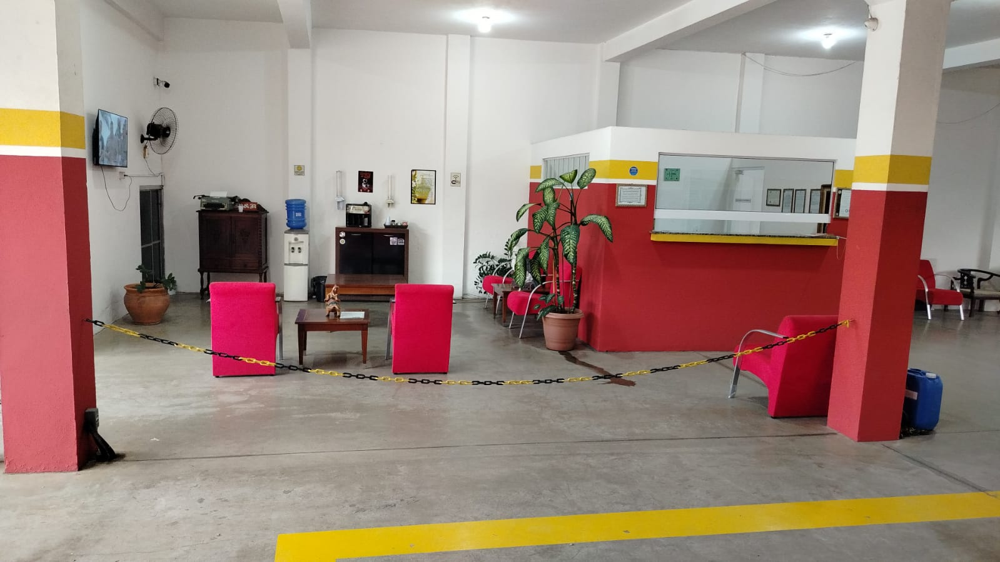
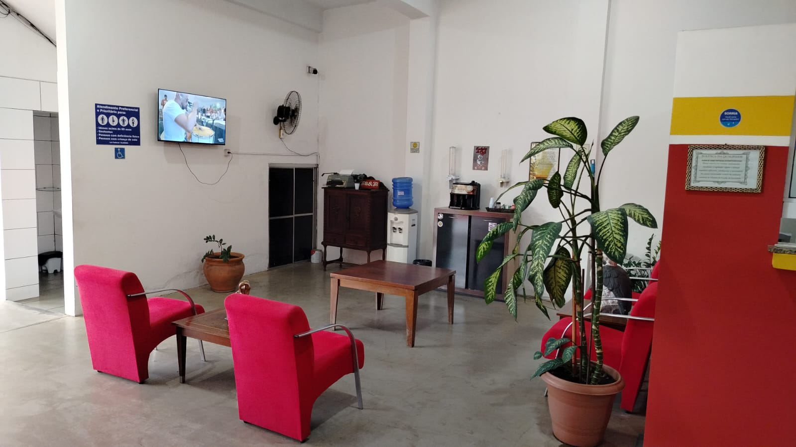
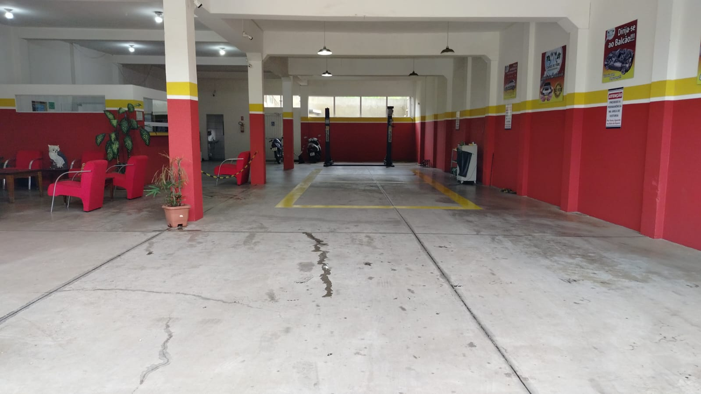
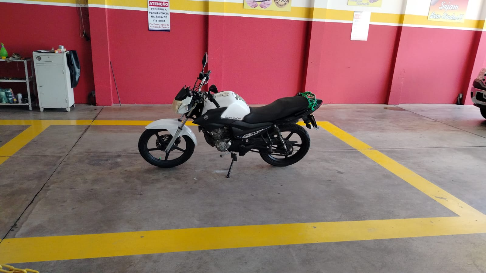
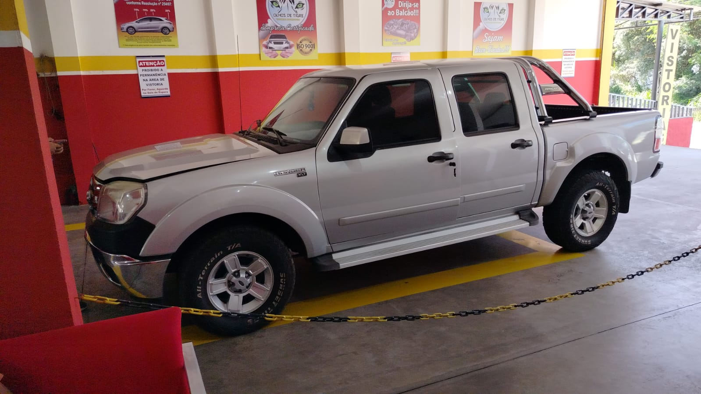
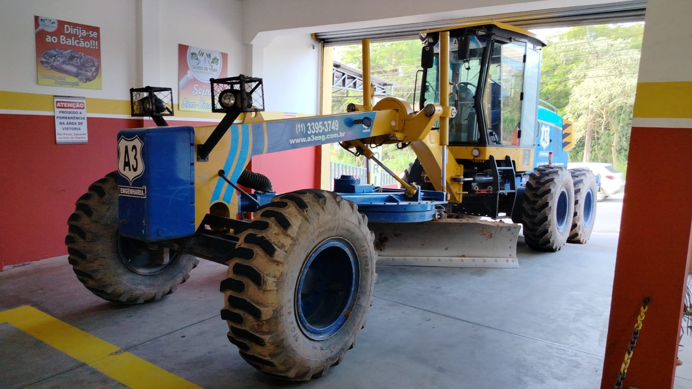
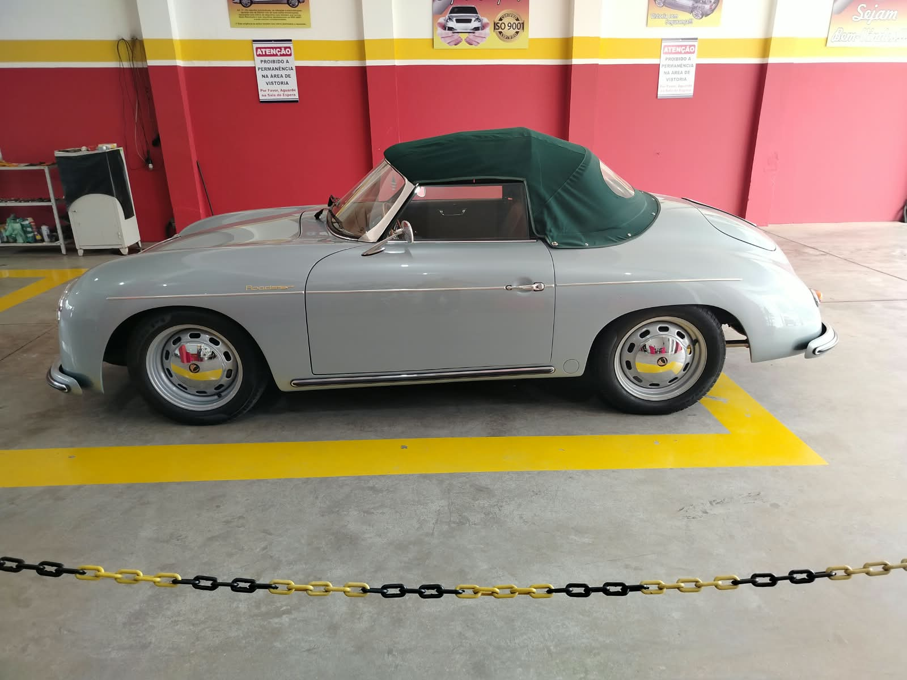
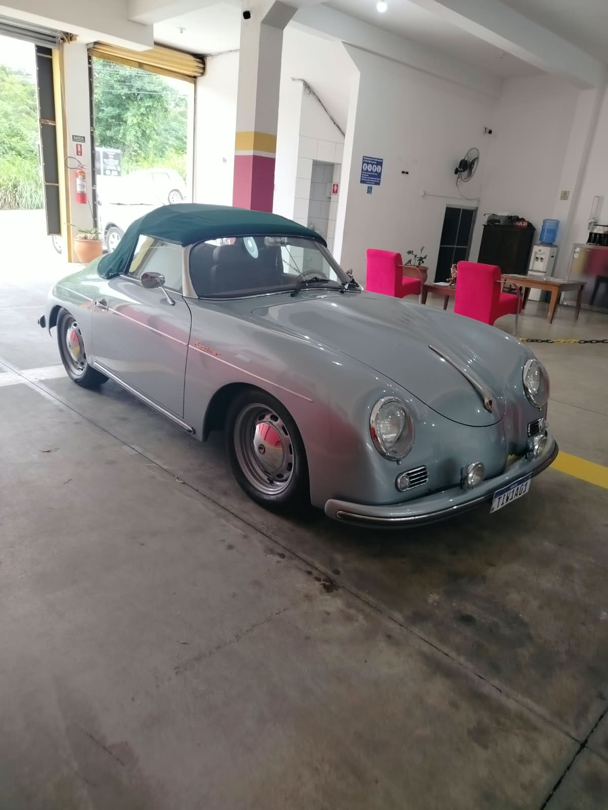

Sobre a Olhos de Tigre Vistorias Automotivas
Compromisso com a precisão técnica, legalidade documental e atendimento humanizado para Jarinu e toda a região.
Empresa Certificada com Padrão de Qualidade ISO 9001
A Olhos de Tigre Vistorias Automotivas Ltda. nasceu com a missão de trazer para Jarinu e região um serviço de inspeção e vistoria veicular pautado pelo rigor técnico absoluto, rapidez no atendimento e transparência total com o cliente.
Nosso nome simboliza a atenção aos mínimos detalhes: o "olhar de tigre" representa a acuidade e a precisão com que cada identificador veicular — chassis, motores, vidros e etiquetas ópticas — é inspecionado por nossa equipe treinada.
Operamos com certificação de qualidade ISO 9001, garantindo processos padronizados, equipamentos calibrados e auditorias constantes para assegurar que cada laudo emitido tenha 100% de segurança jurídica perante o DETRAN-SP.





O que Guia Nossas Vistorias Diárias
Transparência Absoluta
Explicamos cada resultado com clareza. Sem termos complexos — você entende exatamente a situação do seu veículo.
Conformidade Legal
Seguimos rigorosamente as resoluções do CONTRAN e portarias do DETRAN-SP. Laudos transmitidos digitalmente com total integridade.
Respeito ao seu Tempo
Pista organizada, fluxo planejado e vistoriadores treinados para você sair sem filas e sem perda de tempo.
Estrutura Completa no Centro de Jarinu
Instalada na Avenida Ângelo Bernucci, 372, Centro, Jarinu/SP, nossa unidade foi planejada para receber automóveis, furgões, SUVs, picapes e motocicletas com total segurança e comodidade.
- Pista ampla com iluminação de alta definição para inspeção de agregados;
- Baia com demarcação exclusiva para motocicletas e ciclomotores;
- Câmeras óticas e boroscópios digitais para numerações de motor de difícil acesso;
- Sala de espera climatizada, água e atendimento ao balcão;
- Estacionamento de fácil manobra, localização central em Jarinu/SP.
Pista de vistoria — carros e motocicletas

Atendimento para frotas e utilitáriosFotos Reais das Vistorias Realizadas
Veja abaixo registros reais do trabalho realizado pela nossa equipe: vistorias de transferência, identificação de motos, laudos em picapes e muito mais — tudo dentro das instalações da Olhos de Tigre em Jarinu/SP.

Vistoria de Moto — Transferência
Laudo de Transferência — Picape
Vistoria de Veículos de Carga
Vistoria — Veículo de Coleção
Vistoria com Placa PretaVenha Conhecer a Olhos de Tigre em Jarinu
Nossa equipe está pronta para orientar você e realizar a vistoria do seu veículo com máxima agilidade.